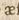
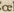

Ligaturen
Vokalische Ligaturen werden grundsätzlich realisiert:
| Vorlage | Zeichen | Entität | Beschreibung |
|---|---|---|---|
|  | æ |
U+00E6 |
LATIN SMALL LETTER AE |
|  | œ |
U+0153 |
LATIN SMALL LIGATURE OE |
Konsonantische Ligaturen (tz, ct, ts, ff etc.)
sowie die Ligatur ij werden dagegen grundsätzlich aufgespalten.